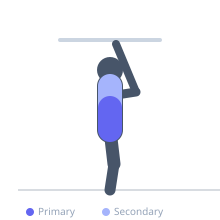
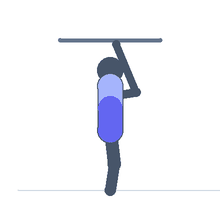

Exercise guide / Typewriter Pull-Up (Core Focus)
Typewriter Pull-Up (Core Focus)
A pull-up variation where at the top of the movement, the body traverses laterally from side to side while maintaining the chin-over-bar position. This taxes the core obliques and lateral stabilizers intensely through the lateral movement. High grip endurance is also demanded.
Primary muscles
internal oblique
external oblique
Secondary muscles
latissimus dorsi
rectus abdominis
Equipment
Pull-Up Bar (Doorframe)


Starting position
- Set up for Typewriter Pull-Up (Core Focus) in proper position.
Setup
- Prepare body and equipment for Typewriter Pull-Up (Core Focus).
Steps
- Step 1: Pull up to chin-over-bar position with wide grip.
- Step 2: Shift weight to one side, extending the opposite arm.
- Step 3: Traverse across to the other side, keeping chin at bar level.
- Step 4: Lower after completing one full pass across.
Coaching cues
- Chin stays at or above bar throughout traverse
- Use smooth lateral shifting
Breathing
- Breathe steadily; never hold breath during static holds.
Range of motion
- Full range of motion with control at all times.
Tempo
- Controlled throughout; hold positions deliberately.
Common mistakes
- Dropping below bar during traverse
- Pulling with arms instead of using lat
Safety
- Build prerequisite strength before attempting advanced variations.
- Stop if joint pain occurs.
Training
- strength: 1–5 reps
- hypertrophy: 5–10 reps
- strength: 3–5 sets
- hypertrophy: 3–4 sets
- Rest: {'strength': 180, 'hypertrophy': 120}